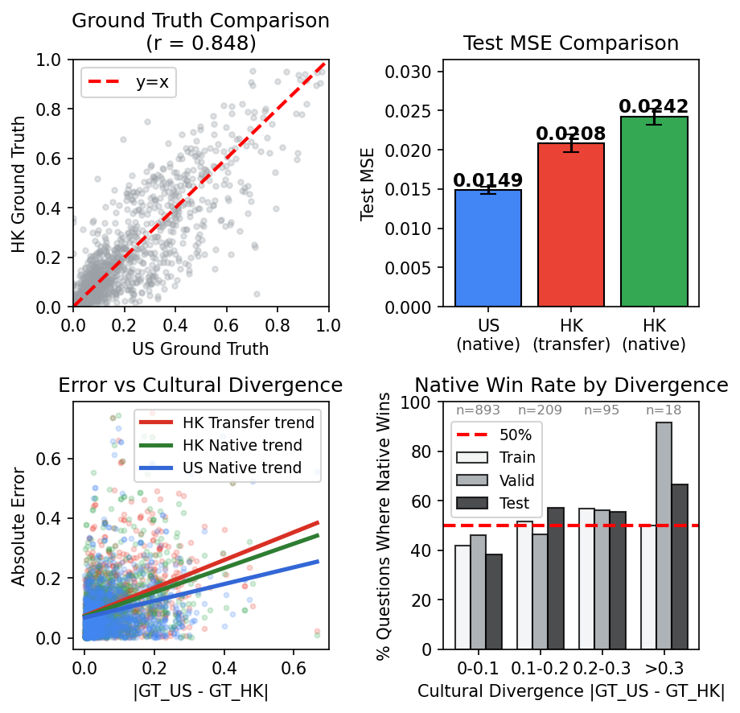

At a glance
From problem to paradigm shift
Problem
Large language models are increasingly used as proxies for human subjects in social science research, but their scientific value depends on external validity: synthetic agents must faithfully reflect the preferences of the populations they are meant to emulate.
Why rethink it
Existing preference-alignment paradigms typically rely on demographic profiling or finetuning a single one-size-fits-all model. These approaches are resource-intensive, often require sensitive data and substantial compute, and do not directly explain how population-level preference heterogeneity should be reconstructed.
Idea
We introduce preference reconstruction theory, which treats preference alignment as a problem of representation learning and statistical inference. Instead of matching profiles, it constructs an expressive basis of proxy agents and recovers population-level preferences through weighted aggregation.
Result
Implemented as a two-stage system, P2P requires no finetuning and no sensitive demographic data, achieves an average test MSE of 0.014 across 14 ATP waves, runs at roughly $0.8 per survey, and yields distinctive empirical insights unavailable under demographic-matching approaches.
How it works
Preference reconstruction in three steps
Key results
Efficient, accessible, and empirically validated
ATP benchmark
| Method | Test MSE | Entropy | Cost |
|---|---|---|---|
| Vanilla | 0.026 | 0.45 | $0.7 |
| PERSONA | 0.029 | 0.43 | $1.3 |
| P2P | 0.014 | 0.53 | $0.8 |
Interpretation
P2P frames accessibility as a design principle rather than a compromise: no finetuning, no demographic profiling, CPU-friendly deployment, and strong performance under modest resource constraints.
Cost estimates are based on Gemini-2.0-flash.
PERSONA cost only covers the response elicitation stage—higher if generation tokens are included.
Paradigmatic contribution
Beyond digital twins
P2P does not treat faithful emulation as a problem of demographic matching. It treats it as a problem of representation learning and statistical inference.
Preference reconstruction, not profiling.
Existing approaches typically rely on demographic conditioning or a single finetuned model. P2P instead constructs an expressive basis of proxy agents and recovers population-level preferences through weighted aggregation.
Expressive basis beats demographic matching.
Figure 3 shows that a more expressive US-generated basis, after only Stage 2 weight refitting, outperforms HK-native generation on average. This directly challenges the assumption that locale-matched profiling is necessary for faithful emulation.
Localization matters on culturally divergent questions.
The same analysis shows where localization helps: prediction error scales with cultural divergence, and locale-matched generation regains an edge on culturally distinctive dimensions. This turns P2P into a diagnostic tool for studying alignment failure, not just a method for improving fit.

Record
Submission history
25 Jul 2025
Submitted to AAAI-26
14 Sep 2025
arXiv v1 posted
18 Sep 2025
Submitted to ICLR-26
28 Jan 2026
arXiv v2 posted
Current
Under review
Citation
BibTeX
@article{wang2025prompts,
title={Prompts to Proxies: Emulating Human Preferences via a Compact LLM Ensemble},
author={Wang, Bingchen and Khoo, Zi-Yu and Wang, Jingtan},
journal={arXiv preprint arXiv:2509.11311},
year={2025}
}